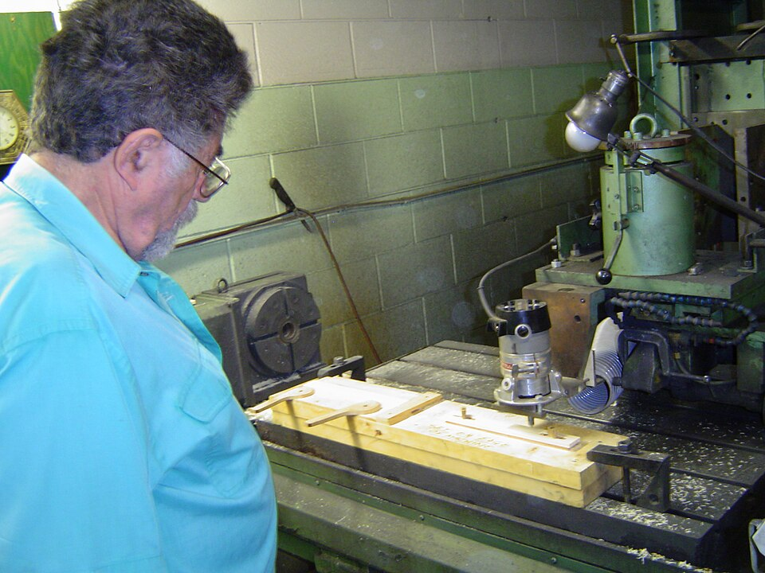

MODULE 2-3・數位加工機具操作
CNC 雕銑操作
CNC 雕銑機用高速旋轉的刀具,從一整塊固體材料上「切削掉多餘的部分」,雕出想要的形狀——這是「減法製造」。
CNC 是什麼?
CNC（Computer Numerical Control,電腦數值控制)是用電腦程式精確控制刀具移動的加工方式。 桌上型 3 軸 CNC 雕銑機,使用高速旋轉的刀具,從一塊固體材料 （如木材、塑膠、軟金屬)上,把多餘的部分一點一點切削掉,留下所需的形狀。

💡 知識小百科
加法製造 vs 減法製造
加法製造（Additive):像 3D 列印,把材料一層層「加」上去。
減法製造（Subtractive):像 CNC、雷射切割,把多餘的材料「拿掉」。
雕刻一塊木頭、削一個蘋果,都是減法的概念——你不能把削掉的部分黏回去,所以
減法製造一旦切錯就無法復原,事前的路徑規劃格外重要。
| 3D 列印 | 雷射切割 | CNC 雕銑 | |
|---|---|---|---|
| 製造方式 | 加法(堆疊) | 減法(汽化) | 減法(切削) |
| 維度 | 3D 立體 | 2D 平面 | 2.5D～3D |
| 常用材料 | 塑膠線材 | 木板、壓克力、皮革(薄片) | 木材、塑膠、軟金屬(塊狀) |
| 強項 | 複雜中空結構 | 快速做 2D 輪廓 | 高強度、高精度、可加工金屬 |
CNC 的操作流程
① 建模
用 CAD 設計要加工的形狀。
② CAM 規劃刀具路徑
用 CAM 軟體規劃刀具該怎麼走、走幾刀、每刀切多深,產生 G-code。
③ 裝夾與對刀
把材料牢牢固定在工作檯上,並設定刀具的起始原點。
④ 加工
機器依 G-code 控制主軸與三軸移動,逐刀切削成形。
🛠️ 動手操作:CNC 刀具路徑模擬器
操作一台 CNC 雕銑機
選擇加工任務,調整刀具直徑與切削參數,讓刀具沿路徑切削材料。 挑戰:順利完成加工而不「斷刀」。
俯視圖・黃點=刀具・灰色=已切削區域
關鍵切削參數
| 參數 | 說明 | 取捨 |
|---|---|---|
| 主軸轉速 Spindle Speed | 刀具旋轉的快慢(RPM)。 | 須配合材料與刀具,過慢易崩邊、過快易燒焦。 |
| 進給速度 Feed Rate | 刀具在材料中前進的速度。 | 太快→負荷過大、易斷刀;太慢→效率低、易摩擦生熱。 |
| 切削深度 Depth of Cut | 每一刀往下切的深度。 | 太深→負荷過大、易斷刀;故深孔常分多刀切削。 |
| 刀具直徑 | 銑刀的粗細。 | 大刀→加工快,但刻不出細節;小刀→能做細節,但較脆弱。 |
🔍 為什麼會「斷刀」?
- 斷刀的根本原因是刀具承受的負荷超過它能負擔的極限。
- 進給太快 × 切削太深:刀具一次要削掉太多材料,負荷暴增。
- 刀具太細:本身強度低,更禁不起大負荷。
- 解法:深孔「分多刀、每刀切淺一點」;細刀就放慢進給。這是 CAM 路徑規劃的重點。
安全操作規範
⚠️ CNC 安全須知(高度危險!)
・高速旋轉刀具:加工中絕對不可將手伸入工作區。
・勿戴手套:手套可能被旋轉刀具捲入,反而更危險;應束起長髮、收好衣物。
・戴護目鏡:切削會產生碎屑、木屑飛濺。
・確實固定工件:材料若沒夾緊,加工中飛出極度危險。
・加工中不可離開,並熟悉緊急停止按鈕的位置。
常見的桌上型 CNC
| 機型 | 品牌／產地 | 特點 |
|---|---|---|
| Genmitsu 3018 系列 | SainSmart（美／中) | 華語圈入門 3 軸 CNC 最普及,文件齊全。 |
| Snapmaker（三合一) | Snapmaker（深圳) | 3D 列印＋雷雕＋CNC 一機,不少學校採用。 |